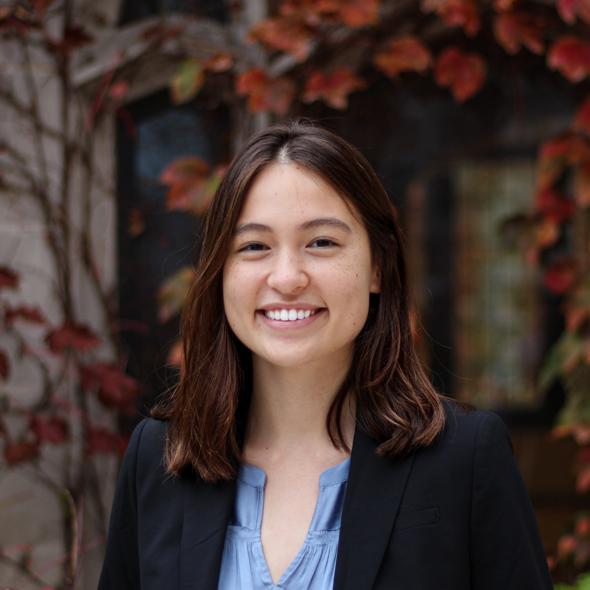

I am a second year Computer Science PhD student at Cornell University focusing on Programming Languages. I'm currently doing research with Prof. Justin Hsu applying category theory and type systems to numerical error analysis and scientific computing. I completed my undergrad in mathematics at the University of Chicago where I did research with Prof. Robert Rand.
I can be reached by email at lzielinski@cs.cornell.edu.
